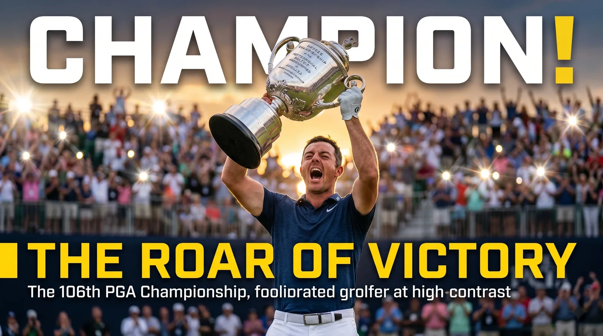

Quick answer: The PGA Championship has been played since 1916, and Aaron Rai is the most recent winner, taking the 2026 title for his first major. Two legends share the all-time record with five wins each: Walter Hagen and Jack Nicklaus. The full year-by-year list of recent champions is below, along with the records, the format changes, and the quirks that make this major different from the other three.

Whether you want the latest winner or the deep history, here is the complete picture.
Who Won the Most Recent PGA Championship?
Aaron Rai won the 2026 PGA Championship, the first major title of his career. The Englishman closed at 9 under par for the win, joining a small group of English players to capture the Wanamaker Trophy.
The year before, Scottie Scheffler won the 2025 edition, part of a season that also included an Open Championship title. So the last two champions could not be more different: a dominant world No. 1 followed by a first-time major winner. That unpredictability is part of the PGA Championship's character.
PGA Championship Winners by Year (Recent Champions)
Here are the winners for the last 25-plus years, the modern era most fans follow:
- 2026: Aaron Rai
- 2025: Scottie Scheffler
- 2024: Xander Schauffele
- 2023: Brooks Koepka
- 2022: Justin Thomas
- 2021: Phil Mickelson
- 2020: Collin Morikawa
- 2019: Brooks Koepka
- 2018: Brooks Koepka
- 2017: Justin Thomas
- 2016: Jimmy Walker
- 2015: Jason Day
- 2014: Rory McIlroy
- 2013: Jason Dufner
- 2012: Rory McIlroy
- 2011: Keegan Bradley
- 2010: Martin Kaymer
- 2009: Yang Yong-eun
- 2008: Pádraig Harrington
- 2007: Tiger Woods
- 2006: Tiger Woods
- 2005: Phil Mickelson
- 2004: Vijay Singh
- 2003: Shaun Micheel
- 2002: Rich Beem
- 2001: David Toms
- 2000: Tiger Woods
Who Has Won the Most PGA Championships?
Two players are tied for the record with five wins each, from completely different eras of the game.
- Walter Hagen: 1921, 1924, 1925, 1926, 1927. His four in a row from 1924 to 1927 is the record for consecutive wins, achieved back when the event was match play.
- Jack Nicklaus: 1963, 1971, 1973, 1975, 1980. His five wins are the most in the stroke-play era, spread across nearly two decades.
Right behind them is Tiger Woods with four titles (1999, 2000, 2006, 2007), including two sets of back-to-back wins. Woods holds the record for consecutive PGA Championship wins in the stroke-play era.
Which Players Have Won It More Than Once?
Twenty-two players have won the PGA Championship multiple times, which tells you how often the game's best rise to the top here. Some of the notable repeat winners in the modern era:
- Brooks Koepka, three times (2018, 2019, 2023)
- Rory McIlroy, twice (2012, 2014)
- Justin Thomas, twice (2017, 2022)
- Tiger Woods, four times
- Nick Price, twice (1992, 1994)
- Gary Player, twice (1962, 1972)
Koepka stands out among current players. His three titles, including back-to-back wins in 2018 and 2019, make him one of the defining PGA Championship performers of the modern age. He clearly saves his best for this event.
When Did the PGA Championship Start, and How Has It Changed?
The first PGA Championship was played in 1916, making it one of golf's oldest majors. Jim Barnes won that inaugural event. Like the other majors, it paused during both World Wars but has otherwise been played every year since.
The biggest change came in 1958, when the tournament switched from match play to stroke play. For its first four-plus decades, the PGA Championship was a head-to-head bracket, which is why Walter Hagen's dominance looks different from later champions. Dow Finsterwald won that first stroke-play edition in 1958. The other major shift was the calendar: in 2019, the PGA Championship moved from August to May, where it now sits as the second major of the year.
What Makes the PGA Championship Different From the Other Majors?
A few things set it apart. It is the only one of the four majors run by the PGA of America, and its trophy, the Wanamaker, is the largest and heaviest in major golf, a genuine monster to lift.
It also has a reputation for producing surprise champions. While the Masters and U.S. Open often crown the biggest names, the PGA Championship has handed the Wanamaker to unexpected winners like Shaun Micheel, Rich Beem, and Jimmy Walker, players who had their one shining major moment here. That mix of legends and longshots gives the event a distinct, unpredictable flavor. It also tends to have one of the deepest fields of any major, since it invites a large number of club professionals alongside the world's elite.
What Are the Biggest PGA Championship Records?
Over a century of golf has produced some standout marks:
- Most wins: Five, shared by Walter Hagen and Jack Nicklaus.
- Lowest 72-hole score: 265, by David Toms in 2001, later matched in total by others but a benchmark for decades.
- Lowest score to par: 21 under, by Xander Schauffele in 2024, the lowest in any men's major in history.
- Oldest champion: Phil Mickelson, who won in 2021 at 50 years old, the oldest major champion ever.
- Youngest champion: Gene Sarazen, who won in 1922 at age 20.
Mickelson's 2021 win deserves a special mention. At 50, he became the oldest player to ever win any major championship, a record many thought would never be touched.
The Raw Read
The PGA Championship is the major that keeps you guessing. Its all-time leaderboard is a mix of the truly immortal, Hagen, Nicklaus, Woods, and the gloriously unexpected, the Beems and Michees who grabbed the biggest week of their lives. That contrast is the whole charm of it.
It does not carry quite the mystique of the Masters or the brutal reputation of the U.S. Open, and for years it got unfairly labeled the least glamorous of the four majors. But move it to May, give it the deepest field in golf and the heaviest trophy in the sport, and you get a championship that consistently delivers drama and the occasional fairy tale. A win here still means everything, whether your name is Nicklaus or Aaron Rai.
Frequently Asked Questions
Who won the 2026 PGA Championship?
Aaron Rai, who earned his first career major title.
Who has won the most PGA Championships?
Walter Hagen and Jack Nicklaus are tied with five wins each.
When was the first PGA Championship?
In 1916, won by Jim Barnes. It has been played every year since except during the two World Wars.
When did the PGA Championship switch from match play to stroke play?
In 1958. Dow Finsterwald won the first stroke-play edition.
Who is the oldest PGA Championship winner?
Phil Mickelson, who won in 2021 at age 50, making him the oldest major champion in history.
What is the lowest score in PGA Championship history?
Xander Schauffele shot 21 under par in 2024, the lowest score to par in any men's major.
Who has won the most consecutive PGA Championships?
Walter Hagen won four in a row (1924-27) in the match-play era. Tiger Woods holds the stroke-play record with two straight, done twice.